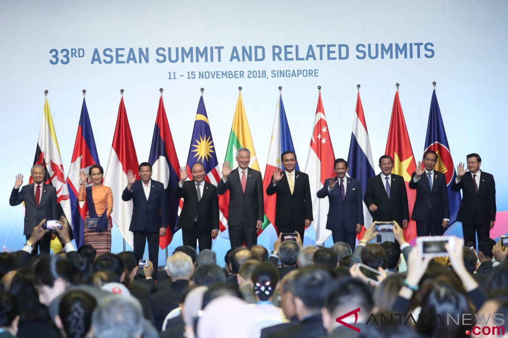
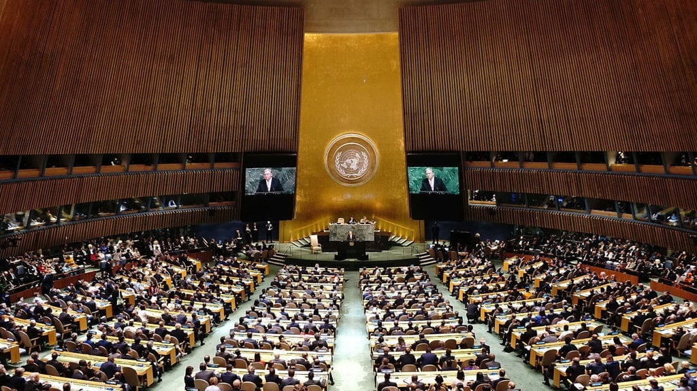

Kerja sama secara umum adalah kegiatan yang dilakukan dua pihak atau lebih untuk mengatasi masalah atau mencapai tujuan bersama. Sedangkan Kerja sama Internasional adalah hubungan kerja sama yang dilakukan oleh dua atau lebih negara merdeka, berdaulat untuk mencapai tujuan tertentu.
Menurut Charlie H. Cooley kerja sama timbul apabila orang menyadari bahwa mereka mempunyai kepentingan yang sama pada saat bersamaan.
Menurut Moh. Jafar Hafsyah kerja sama memiliki arti yang sama dengan istilah kemitraan, yang berarti suatu strategi bisnis yang dilakukan oleh dua pihak atau lebih dalam jangka waktu tertentu untuk meraih keuntungan bersama dengan prinsip saling membutuhkan dan saling membesarkan.
Kerja sama bilateral adalah hubungan kerja sama antara dua negara yang disepakati secara formal untuk mencapai tujuan tertentu dalam berbagai bidang. Indonesia sudah menjalin kerja sama bilateral dengan banyak negara, salah satunya ada kerja sama Indonesia dengan India dalam bidang ekonomi.
 Sumber
Sumber
Kerja sama regional adalah kerja sama yang dilakukan oleh negara-negara dalam suatu kawasan atau wilayah tertentu untuk mencapai tujuan bersama yang mencakup berbagai bidang. Kerja sama ini dapat dilakukan secara perjanjian maupun organisasi. Contoh kerja sama regional yang Indonesia jalin yaitu Kerja sama Multilateral yang Indonesia jalin ada banyak salah satunya adalah Perhimpunan Bangsa-Bangsa Asia Tenggara atau biasanya disebut ASEAN. Kerja sama Multilateral yang didirikan pada 8 Agustus 1967 di Bangkok dan yang sekarang diikuti oleh 11 negara anggota.
 SumberMelalui Kementerian Kesehatan dalam kerja sama dengan Global Health Strategies yang bertujuan untuk meningkatkan kesehatan semua orang di semua negara dengan mempromosikan kesehatan dan menghilangkan penyakit, kecacatan, dan kematian yang dapat dihindari. Indonesia berperan untuk menyebarkan informasi kesehatan kepada masyarakat dan mendorong perilaku hidup sehat melalui kampanye kesehatan nasional.
 Sumber